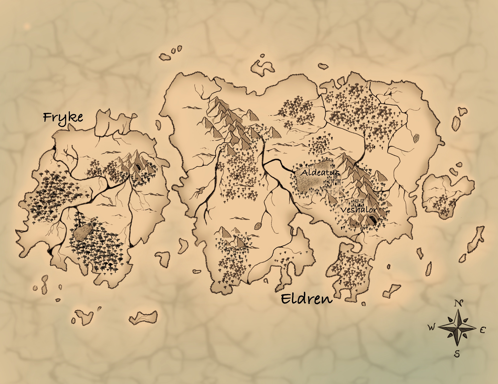

Maps of Avelis
Explore Avelis through different views of the world. Select a map below to view cities, geography, or political boundaries.

Explore Avelis through different views of the world. Select a map below to view cities, geography, or political boundaries.
